Каким образом заставить робота двигаться по желаемой траектории?
| $x$ | состояние динамической системы |
| $u$ | управляющие воздействия |
| $f : \mathbb{R}^n \to \mathbb{R}^n$ | |
| $g : \mathbb{R}^n \to \mathbb{R}^{n\times m}$ | известные гладкие функции |
Известна динамика робота — функции $f(x)$ и $g(x)$.
Задана реализуемая траектория движения робота — функции $x_\star(t)$ и $u_\star(t)$.
Найти обратную связь — функцию $u(x, x_\star, u_\star)$ — такую, чтобы замкнутая система, т.е. дифференциальное уравнение
обладало следующими свойствами:
Как определяется устойчивость решения $x_\star(t)$?
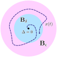
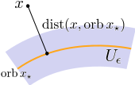
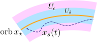
Является ли траектория $x_\star(t)$ устойчивой?
Траектория $x_\star(t)$ не устойчива по Ляпунову.
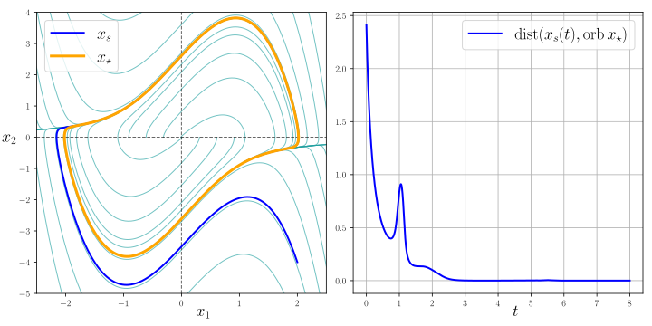
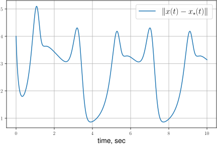
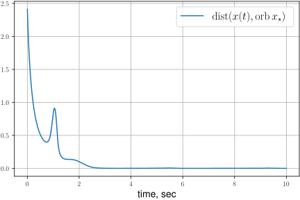
Пусть $\dim x = 2$ и $\dim u = 1$:
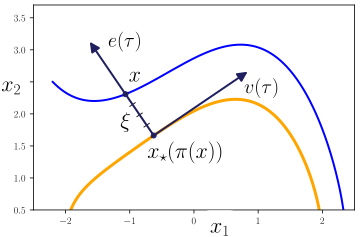
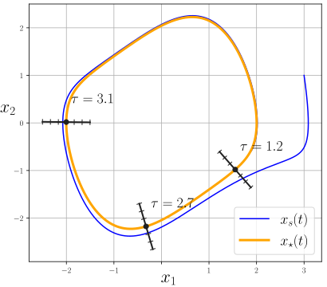
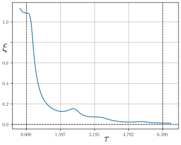
Из экспоненциальной устойчивости линейной системы можно сделать вывод об экспоненциальной устойчивости нелинейной трансверсальной динамики.
Соответствующий закон управления для исходной системы
Нужно задать преобразование координат $x\mapsto (\tau,\xi)$.
Определили координату $\tau$. Как определить ещё $(n-1)$ координат $\xi$?
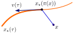
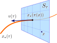
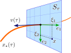
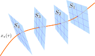
Константные матрицы $Q_i$, позволяющие вычислить базис ортогонального дополнения: $$ e_i(\tau) = Q_i \, v(\tau), \quad i = 1 \dots (n-1), $$ существуют только в $\mathbb{R}^2, \mathbb{R}^4$ и $\mathbb{R}^8$. В пространствах других размерностей таких матриц не существует!
Матрица поворота должна удовлетворять дифференциальному уравнению $$ \frac{d}{d\tau} R(\tau) = S(\tau) R(\tau), $$ где $S(\tau) \in \mathrm{Skew}_n$ — некоторая кососимметрическая матрица.
Требуется определить матрицу $S(\tau)$, для которой решения дифференциального уравнения имеют структуру $$ \mathrm{col}_1 R(\tau) = v(\tau). $$
Но решения уравнения $$\begin{aligned} & \frac{d}{d\tau} R(\tau) = S(\tau) \, R(\tau), \end{aligned}$$ вообще говоря, не являются периодическими. Значит, при $\tau = T$ получим разрыв в преобразовании $\xi = E^\top\!(\tau) \, (x - x_\star(\tau)$.